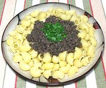

|
Fegato Sauce for PastaItaly - Salsa Peverada | ||||
| For 1 # Effort: Sched: DoAhead: |
Pasta ** 45 min Yes |
A remarkably tasty meat sauce for pasta. The title is in Italian to get you past the fact it's made using liver. Liver haters may be doubters, but if you don't tell them what it is they'll probably like it. | |||
|
|
4 4 6 1 ----- 8 3 1/4 2 ----- 1/2 3 1/2 1/2 1/3 ----- |
oz oz cl --- oz T # T --- T c t t --- |
Chicken Livers Calf Liver Anchovy filets (1) Garlic --Mince Onion Parsley, flatleaf Bacon, smoked Capers -------- Lemon Zest Olive Oil, ExtV Wine, Red Salt Pepper -- Garnish Parsley |
Prep - (17 min)
|